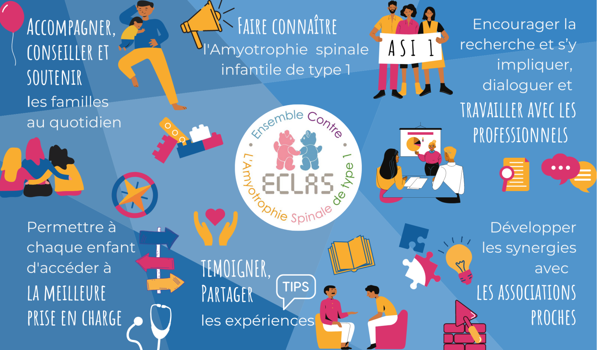
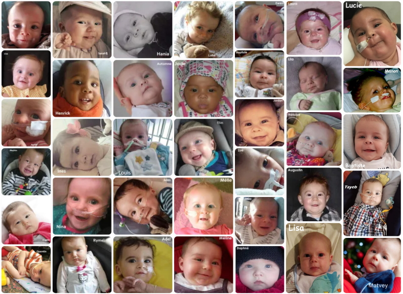

Présentation d’ECLAS
ECLAS est une association dynamique et participative, créée en 2013 pour répondre à la situation spécifique des familles confrontées à l’amyotrophie spinale de type 1.
Nos missions
L’association mise sur le collectif, l’entraide et le partage d’expérience, revendiquant l’importance d’avancer ENSEMBLE !
Nos missions ?
- Faire connaître l’amyotrophie spinale infantile de type 1
- Faire changer le regard sur cette maladie
- Mettre en place un partage d’expérience au bénéfice des familles et professionnels de santé
- Permettre une prise en charge médicale précoce, globale et de qualité pour tous les enfants atteints
- Accompagner et soutenir les familles
- Encourager des initiatives de recherches sur cette maladie et la participation aux essais cliniques
- Développer les contacts et partages d’expérience avec les associations dédiées à la SMA à l’international
Plus d'information : https://eclas.fr/qui-sommes-nous/
L’amyotrophie spinale de type 1, c’est quoi ?
L’amyotrophie spinale de type 1 (ASI1 ou SMA1) est aussi appelée maladie de Werdnig Hoffmann. C’est une maladie héréditaire, neuromusculaire et dégénérative qui affecte les nourrissons.
C’est la forme la plus sévère (avec le type dit « zéro ») d’un groupe de maladie qui comprend également les types 2 et 3. En France, on estime que cette maladie concerne entre 1/6000 et 1/10000 naissances par an tous types confondus, soit environ 120 nouveaux cas chaque année. Dans 98 % des cas, les parents sont tous deux porteurs d’un même gène défectueux, comme une personne sur 40 dans la population.
L’amyotrophie spinale de type 1 débute dans les premiers jours ou premiers mois de vie et se traduit par une faiblesse musculaire qui entraîne progressivement une paralysie des membres, une insuffisance respiratoire chronique associée à une toux inefficace, des troubles de la succion de la déglutition et de la digestion. L’intellect n’est pas affecté et l’éveil comme la sociabilité sont souvent exceptionnels.
La maladie rend ces enfants très fragiles. Il y a encore quelques années, on estimait que la grande majorité des enfants décédaient avant l’âge de deux ans avec de grandes variabilités. Ces données statistiques sont en train d’évoluer positivement. Les premiers traitements sont aujourd’hui disponibles. Ils ne sont pas accessibles à tous les enfants (administration au cas par cas en fonction de l’état de santé notamment) mais sont porteurs d’espoir et permettent d’améliorer le sombre pronostic de l’ASI1.
La FAQ (foire aux questions) : https://eclas.fr/la-maladie/
Nos actions :
Depuis sa création, ECLAS a mis en œuvre des actions pour répondre aux grandes priorités qui animent l’association au quotidien :
- Aider les familles à « vivre la maladie autrement » et continuer à avancer
- Améliorer, toujours plus, la prise en charge des enfants en s’adaptant aux évolutions que permet la recherche
- Faire connaître l’amyotrophie spinale de type 1, maladie qui reste encore largement méconnue du grand public
De nombreux projets pleins de vie sont aussi mis en oeuvre. Ils se caractérisent aussi par leur diversité, leur ingéniosité et leur originalité. Ils sont tous portés par les familles d’ECLAS en fonction de leurs envies, de leurs parcours et de leurs savoir-faire… Découvrez nos actions par thème :
- Le dialogue des familles
- Pour l’éveil de bébé
- Pour le confort de bébé
- Pour la fratrie
- Auprès des pros
- Ensemble face aux deuils
Plus d'information : https://eclas.fr/nos-actions/

retout en haut